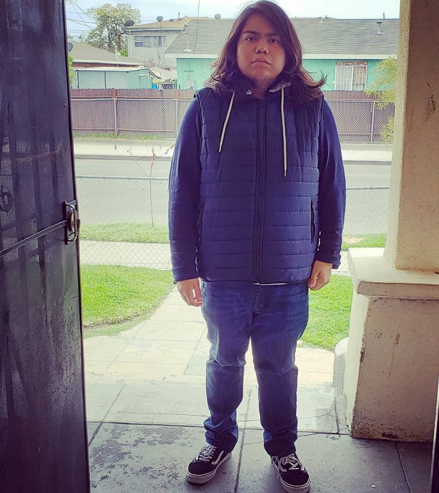

Hello and welcome to my resume website, my name is Ulises Ramirez and i am a Front-End web developer. Below you can see my work experiance,skills and education if you would like to see website ive created please click on the websites link. I hope to one day further my knowledge and start my career as a full stack web developer.